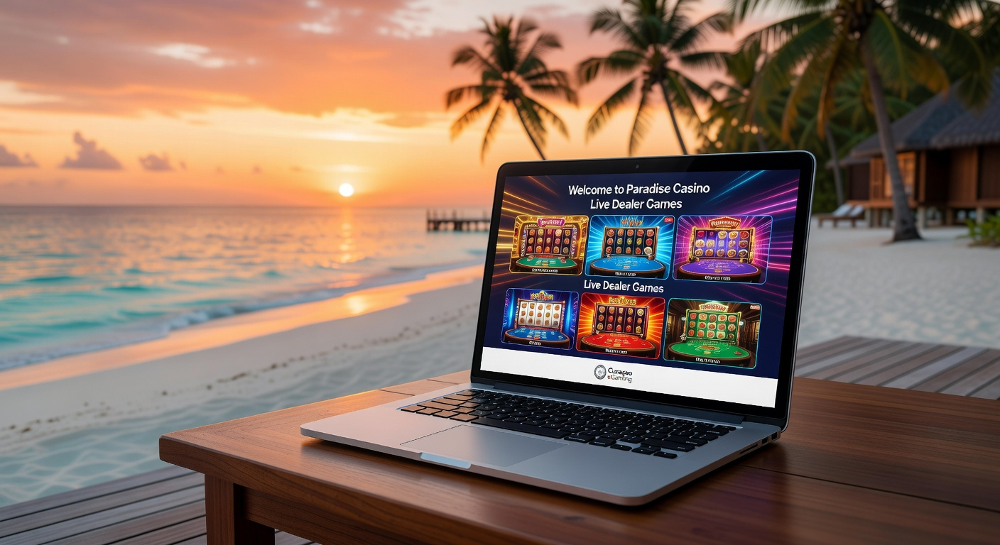

Guida ai migliori casino online stranieri che accettano italiani nel 2026
Il panorama del gioco d'azzardo digitale ha subìto una trasformazione radicale negli ultimi anni. Entrando nel 2026, notiamo come la tecnologia abbia abbattuto i confini geografici, rendendo i casino online stranieri che accettano italiani una delle scelte preferite dai giocatori esperti. Queste piattaforme, operanti con licenze internazionali, offrono un'esperienza che va oltre i limiti dei circuiti nazionali, proponendo innovazioni che spaziano dalla realtà aumentata all'integrazione totale delle criptovalute.
Millioner Casino
★★★★★ 5.0Bonus di benvenuto fino a €500
Roulettino Casino
★★★★★ 4.8Bonus 100% sul primo deposito
Wyns Casino
★★★★★ 4.7Bonus esclusivo fino a €1000
Kinbet Casino
★★★★★ 4.5200% bonus + 50 giri gratis
Dragonia Casino
★★★★★ 4.4Bonus benvenuto 150% fino a €300
Divaspin Casino
★★★★★ 4.3100% fino a €500 + 100 free spins
Monsterwin Casino
★★★★☆ 4.1Pacchetto benvenuto fino a €1500
Cercare i migliori casino online stranieri che accettano italiani richiede un'analisi attenta della sicurezza e dell'affidabilità. Nel 2026, il mercato è estremamente maturo e la competizione tra operatori ha portato a un innalzamento qualitativo senza precedenti. Gli utenti oggi non cercano solo un passatempo, ma un ecosistema completo dove il bonus di benvenuto è solo l'inizio di un percorso di fidelizzazione basato su trasparenza e varietà ludica.
Esplorando i vari casino online stranieri che accettano italiani, si nota subito una flessibilità maggiore nelle puntate e una selezione di titoli che spesso include software provider emergenti non ancora presenti nel mercato locale. Questa diversità è il vero punto di forza delle piattaforme non aams, che riescono a garantire un ritorno al giocatore (RTP) mediamente più alto grazie a una pressione fiscale differente nei paesi di licenza. Per chi cerca opzioni vantaggiose, consultare una casino online esteri può offrire spunti interessanti sulle ultime novità del continente.
Oltre alla varietà dei giochi, i casino online stranieri che accettano italiani si distinguono per l'efficienza dei metodi di pagamento. Nel 2026, la velocità delle transazioni è diventata il principale parametro di valutazione. Non è raro trovare siti che processano i prelievi istantaneamente, utilizzando tecnologie blockchain che garantiscono anonimato e sicurezza. In questo contesto, i migliori casino online stranieri sono quelli che riescono a coniugare una licenza solida con un'interfaccia utente futuristica e intuitiva.
Perché scegliere i casino online stranieri che accettano italiani oggi
La scelta di migrare verso i casino online stranieri che accettano italiani è spesso dettata dalla ricerca di libertà operativa. Queste piattaforme non sono soggette alle restrizioni stringenti sulle tempistiche di gioco o sui limiti di deposito settimanali imposti da alcune giurisdizioni locali. Nel 2026, la consapevolezza del giocatore è aumentata, e molti preferiscono gestire il proprio bankroll in autonomia, trovando nei casino online stranieri che accettano italiani l'ambiente ideale per farlo.
Un altro fattore determinante è l'entità delle promozioni. I bonus casino stranieri senza deposito sono diventati molto più frequenti e sostanziosi rispetto al passato. Molti operatori internazionali utilizzano queste offerte per attrarre il pubblico italiano, offrendo crediti di gioco o giri gratuiti semplicemente per la creazione di un account. Questo approccio permette ai nuovi utenti di testare la qualità del software dei casino online stranieri che accettano italiani senza impegnare i propri fondi inizialmente.
L'accessibilità è un altro punto chiave. Grazie alle moderne web app e all'ottimizzazione per il mobile, i casino online stranieri che accettano italiani offrono un'esperienza fluida su qualsiasi dispositivo. Che si tratti di uno smartphone di ultima generazione o di un visore VR, l'immersività è totale. Inoltre, molti giocatori apprezzano i vantaggi registrazione spid presenti in alcune piattaforme ibride, sebbene la maggior parte dei vantaggi registrazione spid resti legata ai portali con licenza specifica, gli operatori esteri puntano tutto sulla semplicità del modulo di iscrizione classico.
Infine, la presenza di tornei globali con montepremi milionari rende i casino online stranieri che accettano italiani estremamente attraenti. Competere con giocatori provenienti da tutto il mondo, dall'Asia all'America Latina, aggiunge un livello di sfida e prestigio che le piattaforme locali faticano a replicare. La lista casino stranieri disponibili oggi è vastissima, ma solo i migliori riescono a garantire un supporto clienti in lingua italiana attivo 24 ore su 24, un requisito fondamentale per operare con successo nel 2026.
Curaçao egaming: La licenza di riferimento

Quando si parla di casino online stranieri che accettano italiani, la licenza Curaçao eGaming è spesso la più citata. Nel 2026, questa autorità di regolamentazione ha raggiunto standard di controllo paragonabili a quelli europei, pur mantenendo una flessibilità che favorisce l'innovazione tecnologica. I casino online stranieri che accettano italiani autorizzati a Curaçao offrono garanzie solide in termini di equità dei giochi e protezione dei dati personali, utilizzando protocolli di crittografia di ultima generazione.
Il vantaggio principale per i casino online stranieri che accettano italiani sotto questa giurisdizione è la possibilità di accettare criptovalute senza restrizioni eccessive. Questo ha permesso la nascita di veri e propri "Crypto Casinos" dove Bitcoin, Ethereum e Solana sono le valute principali. Per l'utente, questo si traduce in prelievi che non richiedono giorni di attesa, ma che vengono confermati sulla blockchain in pochi minuti. La reputazione dei casino online stranieri che accettano italiani con licenza Curaçao è cresciuta esponenzialmente grazie a una politica di risoluzione delle dispute molto più rapida ed efficiente.
È importante notare che operare con una licenza internazionale non significa operare nell'illegalità. I casino online stranieri che accettano italiani seguono normative internazionali sul riciclaggio di denaro (AML) e sulla conoscenza del cliente (KYC). Nel 2026, i processi di verifica sono diventati semi-automatici, permettendo ai casino online stranieri che accettano italiani di convalidare l'identità di un giocatore in poche ore, eliminando le lungaggini burocratiche del passato. Per maggiori dettagli sulla regolamentazione internazionale, è possibile consultare il sito ufficiale della Malta Gaming Authority, un altro pilastro del settore.
In sintesi, i casino online stranieri che accettano italiani che espongono il sigillo di Curaçao offrono un mix perfetto tra sicurezza e modernità. Molti di questi siti compaiono regolarmente nella lista casino stranieri più affidabili del web, proprio per la loro capacità di adattarsi alle esigenze di un pubblico globale. La trasparenza è garantita dalla pubblicazione periodica dei report sugli algoritmi RNG (Random Number Generator), assicurando che ogni sessione nei casino online stranieri che accettano italiani sia assolutamente imparziale.
Bonus sul deposito: Come massimizzare i vantaggi
Nei casino online stranieri che accettano italiani, i bonus sul deposito rappresentano la colonna portante delle strategie di marketing. Nel 2026, non è raro trovare offerte che coprono i primi quattro o cinque versamenti, con percentuali che superano spesso il 100%. Questi pacchetti di benvenuto nei casino online stranieri che accettano italiani sono pensati per fornire un capitale di partenza robusto, ideale per chi desidera esplorare l'intera selezione di slot e giochi da tavolo disponibili.
Un aspetto fondamentale da valutare nei casino online stranieri che accettano italiani è il "wagering requirement" o requisito di scommessa. Nel 2026, la tendenza è verso requisiti più equi, spesso fissati tra 25x e 35x, rendendo il bonus di benvenuto effettivamente trasformabile in saldo prelevabile. I casino online stranieri che accettano italiani più onesti indicano chiaramente i termini e le condizioni, evitando clausole nascoste che potrebbero frustrare l'esperienza di gioco dell'utente.
Esistono diverse tipologie di incentivi legati al versamento nei casino online stranieri che accettano italiani:
- Match Bonus: La piattaforma raddoppia o triplica il deposito iniziale.
- Free Spins: Giri gratuiti sulle slot machine più popolari o appena lanciate.
- Reload Bonus: Bonus ricorrenti per i depositi effettuati in giorni specifici della settimana.
- Cashback Bonus: Un rimborso percentuale sulle perdite nette accumulate.
Per chi cerca di ottimizzare ogni centesimo, i casino online stranieri che accettano italiani offrono spesso bonus dedicati a chi utilizza le criptovalute. Questi incentivi sono solitamente più alti rispetto a quelli per i metodi tradizionali, poiché i casino online stranieri che accettano italiani risparmiano sulle commissioni di transazione e trasferiscono questo risparmio all'utente sotto forma di credito extra. Questa dinamica ha reso i casino online stranieri i leader indiscussi nell'offerta di valore aggiunto al giocatore nel 2026.
Promozioni periodiche e programmi fedeltà
Oltre all'offerta iniziale, la longevità dei casino online stranieri che accettano italiani dipende dalla loro capacità di mantenere vivo l'interesse degli iscritti. Nel 2026, i programmi fedeltà sono diventati delle vere e proprie esperienze di gamification. Giocando ai propri titoli preferiti nei casino online stranieri che accettano italiani, gli utenti accumulano punti che permettono di scalare livelli VIP, sbloccando premi sempre più esclusivi come assistenti personali, limiti di prelievo maggiorati e regali fisici di lusso.
Le promozioni periodiche nei casino online stranieri che accettano italiani sono variegate e frequenti. Si va dai tornei stagionali con classifiche in tempo reale alle missioni quotidiane che premiano la costanza. Questi eventi non solo aumentano le possibilità di vincita, ma rendono la permanenza nei casino online stranieri che accettano italiani molto più dinamica e sociale. Molte piattaforme hanno integrato chat live dove i giocatori possono scambiarsi consigli e celebrare insieme le grandi vincite, creando una vera e propria comunità internazionale.
Un elemento molto ricercato è il bonus casino senza deposito stranieri, che spesso viene erogato come premio fedeltà o per il compleanno dell'utente. Queste piccole attenzioni fanno la differenza nella scelta dei casino online stranieri che accettano italiani a lungo termine. Inoltre, i bonus immediato senza deposito siti stranieri permettono di testare le nuove slot in esclusiva senza alcun rischio finanziario. L'obiettivo dei casino online stranieri che accettano italiani nel 2026 è eliminare la monotonia, proponendo ogni giorno un motivo diverso per effettuare il login.
La trasparenza in queste promozioni è essenziale. I migliori casino online stranieri che accettano italiani mettono a disposizione una dashboard chiara dove monitorare l'avanzamento dei propri bonus e i requisiti ancora da soddisfare. In questo modo, il casinò online diventa un partner affidabile nel tempo libero dell'utente. Se volete approfondire le varie tipologie di offerte, è utile consultare la pagina sui migliori casino online stranieri per un confronto aggiornato in tempo reale.
La rivoluzione dei Crash games
Il 2026 segna il dominio incontrastato dei Crash games all'interno dei casino online stranieri che accettano italiani. Questi giochi, nati nel mondo delle scommesse crypto, hanno conquistato il grande pubblico per la loro semplicità e l'alto potenziale di adrenalina. Titoli come Aviator, JetX e le loro evoluzioni grafiche del 2026 sono presenti in quasi tutti i casino online stranieri che accettano italiani. La meccanica è immediata: un moltiplicatore cresce e il giocatore deve incassare prima che l'evento (un aereo che vola, un razzo che parte) "crashi".
L'attrattiva dei Crash games nei casino online stranieri che accettano italiani risiede anche nella componente sociale e nella trasparenza tecnologica. La maggior parte di questi titoli utilizza la tecnologia "Provably Fair", che permette a chiunque di verificare l'integrità di ogni singolo round sulla blockchain. Questo livello di onestà è ciò che ha spinto molti utenti verso i casino online stranieri che accettano italiani, preferendoli ai formati più classici e talvolta percepiti come meno limpidi.
Nei casino online stranieri che accettano italiani, i Crash games offrono opzioni di scommessa automatica e incasso automatico, permettendo ai giocatori di applicare strategie matematiche complesse. Questo aspetto strategico ha creato una nicchia di professionisti che frequentano i casino online stranieri che accettano italiani esclusivamente per queste modalità. La velocità di un round, che dura spesso meno di 30 secondi, si sposa perfettamente con il ritmo frenetico della vita moderna nel 2026.
Inoltre, i casino online stranieri che accettano italiani spesso organizzano tornei specifici per i Crash games, con jackpot progressivi che aumentano in base al numero di partecipanti. Questa integrazione tra gioco individuale e competizione collettiva è uno dei motivi per cui la lista casino stranieri di successo nel 2026 è dominata da operatori che puntano forte su questa categoria. L'innovazione non si ferma, e nei casino online stranieri che accettano italiani iniziano ad apparire versioni dei Crash games in realtà virtuale, dove il giocatore si trova fisicamente "dentro" l'azione.
Poker: Tornei e tavoli cash internazionali
Il poker rimane uno dei pilastri fondamentali per i casino online stranieri che accettano italiani. La differenza principale tra le piattaforme locali e i casino online stranieri che accettano italiani risiede nella "liquidità" internazionale. Poter sfidare avversari provenienti da ogni angolo del globo significa trovare tavoli attivi a qualsiasi ora del giorno e della notte, con livelli di buy-in adatti a ogni tasca, dai freeroll ai tavoli high-stakes per professionisti.
Nel 2026, i casino online stranieri che accettano italiani hanno perfezionato le proprie lobby pokeristiche, offrendo non solo il classico Texas Hold'em, ma anche varianti spettacolari come l'Omaha a 6 carte, lo Short Deck e i tornei "Knockout" che premiano l'aggressività. La qualità del software nei casino online stranieri che accettano italiani è altissima, con grafiche fluide e interfacce personalizzabili che permettono il multi-tabling senza sforzo. Molti casino online stranieri offrono anche scuole di poker integrate per aiutare i neofiti a migliorare le proprie abilità.
I vantaggi di giocare a poker nei casino online stranieri che accettano italiani includono:
| Caratteristica | Piattaforme Locali | Casino Online Stranieri |
|---|---|---|
| Liquidità | Limitata al territorio nazionale | Globale (Migliaia di utenti) |
| Rakeback | Spesso assente o basso | Fino al 60% per utenti VIP |
| Varietà Tornei | Programmazione standard | Eventi h24 con garantiti enormi |
| Software | Basico | Avanzato con HUD integrati |
La sicurezza ai tavoli è un'altra priorità per i casino online stranieri che accettano italiani. Nel 2026, sistemi avanzati di intelligenza artificiale monitorano costantemente il gioco per prevenire collusione o l'uso di bot, garantendo un ambiente equo per tutti. Chi sceglie i casino online stranieri che accettano italiani per il poker sa di poter contare su prelievi rapidi delle proprie vincite, spesso utilizzando i metodi di pagamento istantanei citati in precedenza.
Infine, non bisogna dimenticare l'aspetto del bonus di benvenuto specifico per il poker. Molti casino online stranieri che accettano italiani offrono un bonus progressivo che si sblocca giocando, oltre a ticket gratuiti per tornei con montepremi garantito. Questa accoglienza generosa rende i casino online stranieri che accettano italiani la destinazione preferita per chi vuole trasformare la propria passione per le carte in un'attività potenzialmente redditizia.
Scommesse sportive: Quote e mercati esteri
Molti dei casino online stranieri che accettano italiani offrono anche una sezione sportsbook di altissimo livello. Nel 2026, la distinzione tra casino e scommesse è quasi svanita, con portali unici che offrono un'esperienza di gioco a 360 gradi. Il vantaggio competitivo dei casino online stranieri che accettano italiani in questo settore è rappresentato dalle quote, spesso più vantaggiose rispetto al mercato domestico grazie a una tassazione più leggera applicata agli operatori internazionali.
La varietà dei mercati è un altro punto di forza. Oltre al calcio, nei casino online stranieri che accettano italiani è possibile scommettere su sport di nicchia, eSports in continua espansione e persino su eventi della cultura pop o della politica internazionale. Il bonus bookmakers stranieri è solitamente molto flessibile, permettendo scommesse gratuite o rimborsi sulla prima giocata non vincente. Questa ampiezza di vedute rende i casino online stranieri che accettano italiani ideali per chi cerca opportunità di scommessa oltre i soliti schemi.
Il live betting ha raggiunto nuove vette nel 2026. All'interno dei casino online stranieri che accettano italiani, gli utenti possono seguire gli eventi in streaming ad alta definizione e piazzare scommesse in tempo reale con tempi di accettazione quasi nulli. La tecnologia 5G ha reso questa esperienza fluida anche da mobile, consolidando i casino online stranieri che accettano italiani come leader dell'innovazione nel betting. Per una panoramica sulle scommesse e la loro regolamentazione, si può consultare la sezione dedicata di Wikipedia.
Un elemento distintivo dei casino online stranieri che accettano italiani è la possibilità di effettuare il "Cash Out" totale o parziale su quasi tutti gli eventi. Questa funzione permette di chiudere una scommessa prima che l'evento sia terminato, garantendosi un profitto o limitando una perdita. È una flessibilità che i giocatori professionisti apprezzano enormemente e che i casino online stranieri che accettano italiani promuovono attivamente per differenziarsi dalla concorrenza meno evoluta.
Roulette: Varianti e limiti di puntata
La Roulette resta la "regina" indiscussa dei casino online stranieri che accettano italiani. Nel 2026, l'offerta non si limita più alla sola versione Europea o Americana. I giocatori possono accedere a varianti esotiche e innovative, come la Roulette con moltiplicatori casuali (Lightning o Quantum) che possono pagare fino a 500 volte la posta. Questi titoli sono disponibili in quasi tutti i casino online stranieri che accettano italiani che collaborano con i grandi nomi del software come Evolution Gaming o Pragmatic Play.
I limiti di puntata nei casino online stranieri che accettano italiani sono estremamente ampi. Si può iniziare scommettendo pochi centesimi di euro fino ad arrivare a migliaia di euro per singolo giro nei tavoli "Privé". Questa scalabilità è ciò che rende i casino online stranieri che accettano italiani adatti sia al giocatore occasionale che al "high roller". La trasparenza è assicurata da inquadrature multiple nei tavoli live, che permettono di seguire ogni movimento della pallina con una chiarezza cinematografica.
Inoltre, molti casino online stranieri che accettano italiani offrono tavoli con croupier che parlano italiano, rendendo l'atmosfera familiare nonostante la licenza estera. L'interattività è ai massimi livelli nel 2026, con la possibilità di chattare non solo con il dealer ma anche con gli altri giocatori seduti al tavolo. Questa dimensione sociale è un pilastro dei migliori casino online stranieri, che puntano a replicare fedelmente l'esperienza di un casino terrestre di Las Vegas o Montecarlo direttamente sul divano di casa.
Per chi preferisce la velocità del software RNG, i casino online stranieri che accettano italiani propongono versioni della roulette ultra-rapide, ideali per chi ha poco tempo o vuole testare sistemi di scommessa come il raddoppio. È sempre consigliabile verificare la lista casino stranieri per trovare quelli che offrono le migliori versioni "Pro" della roulette, che spesso includono statistiche avanzate sugli ultimi 500 numeri estratti, facilitando le analisi dei giocatori più metodici nei casino online stranieri che accettano italiani.
Blackjack: Strategie e tavoli live
Il Blackjack è il gioco di abilità per eccellenza e nei casino online stranieri che accettano italiani trova la sua massima espressione. Nel 2026, la sfida contro il banco è diventata ancora più coinvolgente grazie ai tavoli "Infinite", dove non ci sono limiti di posti a sedere. I casino online stranieri che accettano italiani investono massicciamente in questa categoria, sapendo che il giocatore informato cerca piattaforme dove le regole siano vantaggiose, come il dealer che sta su tutti i 17.
Le opzioni di "Side Bets" (scommesse laterali) sono un altro motivo per cui i casino online stranieri che accettano italiani sono così popolari. Coppie perfette, 21+3 e altre combinazioni aggiungono un livello di eccitazione extra a ogni mano. Molti casino online stranieri offrono anche il Blackjack con jackpot progressivo, una rarità fino a pochi anni fa ma ormai uno standard nelle piattaforme internazionali più avanzate del 2026.
Strategicamente, i casino online stranieri che accettano italiani incoraggiano il gioco responsabile e informato, spesso fornendo tabelle della strategia di base direttamente nell'interfaccia di gioco. Questo approccio educativo aiuta l'utente a godersi l'esperienza nei casino online stranieri che accettano italiani per periodi più lunghi, migliorando le proprie probabilità di successo. La correttezza del mazzo e dei mescolatori automatici è garantita da certificazioni esterne che ogni casinò online serio espone chiaramente nel footer del sito.
Infine, i tornei di Blackjack nei casino online stranieri che accettano italiani rappresentano un'opportunità unica. In questi eventi, non si gioca solo contro il banco, ma contro gli altri partecipanti per scalare una classifica basata sulle chips accumulate. I premi per questi tornei nei casino online stranieri che accettano italiani possono essere cospicui, spesso costituiti da bonus in denaro reale o ingressi per eventi dal vivo sponsorizzati dal casino online stranieri stesso. È questa visione globale e competitiva che definisce il mercato del gioco nel 2026.
Metodi di pagamento e sicurezza nelle transazioni
La questione dei metodi di pagamento è centrale quando si scelgono i casino online stranieri che accettano italiani. Nel 2026, la varietà è impressionante. Oltre alle classiche carte di credito e ai portafogli elettronici come Revolut o Wise, i casino online stranieri che accettano italiani hanno abbracciato totalmente le valute digitali. Bitcoin, Ethereum, USDT e Litecoin sono diventati standard, offrendo transazioni quasi istantanee e una privacy superiore rispetto ai circuiti bancari tradizionali.
La sicurezza è garantita da protocolli SSL di grado bancario e dall'autenticazione a due fattori (2FA), che ogni casino online stranieri che accettano italiani richiede obbligatoriamente nel 2026. Questo livello di protezione assicura che i fondi degli utenti siano sempre al sicuro da intrusioni esterne. Inoltre, la selezione di gateway di pagamento nei casino online stranieri che accettano italiani include spesso opzioni "Pay n Play", che permettono di depositare e iniziare a giocare istantaneamente, saltando i lunghi moduli di registrazione grazie alla verifica tramite l'identità bancaria digitale.
Ecco una panoramica dei tempi medi di prelievo nei casino online stranieri che accettano italiani nel 2026:
- Criptovalute: 5-30 minuti.
- E-wallets (Revolut, MuchBetter): 1-2 ore.
- Carte di Credito/Debito: 12-24 ore.
- Bonifico Bancario: 1-2 giorni lavorativi.
È importante sottolineare che i casino online stranieri che accettano italiani più affidabili non applicano commissioni sui depositi o sui prelievi. Questo è un grande vantaggio rispetto ad alcuni operatori locali che ancora oggi caricano piccoli costi di gestione. La libertà finanziaria è uno dei motivi per cui i migliori casino online stranieri continuano a crescere in popolarità tra gli utenti della penisola. Chi cerca un bonus di benvenuto vantaggioso dovrebbe sempre controllare se l'utilizzo di determinati metodi di pagamento (come certi e-wallet) qualifica per l'offerta, poiché i casino online stranieri che accettano italiani hanno regole specifiche in merito.
In conclusione, la gestione del denaro nei casino online stranieri che accettano italiani nel 2026 è rapida, sicura e incredibilmente varia. Che siate amanti della tradizione o pionieri delle cripto, troverete nei casino online stranieri la soluzione più adatta alle vostre esigenze di scommessa e prelievo.
Conclusioni
I casino online stranieri che accettano italiani rappresentano oggi la frontiera più avanzata del gioco d'azzardo digitale. Grazie a licenze internazionali solide come quella di Curaçao e a una costante spinta verso l'innovazione tecnologica, queste piattaforme offrono un'esperienza che supera i confini nazionali in termini di bonus, varietà di giochi e velocità di pagamento. Nel 2026, la sicurezza non è più un dubbio, ma una certezza costruita su anni di trasparenza e miglioramento dei protocolli di protezione.
Scegliere uno dei casino online stranieri che accettano italiani significa accedere a un mercato globale, dove i vantaggi per il giocatore sono messi al centro del modello di business. Dai ricchi bonus sul deposito alle rivoluzionarie meccaniche dei Crash games, ogni elemento è studiato per massimizzare il divertimento. Tuttavia, è sempre fondamentale giocare in modo responsabile e informato, selezionando solo i migliori casino online stranieri recensiti e verificati da esperti del settore.
Il futuro del gioco è senza dubbio internazionale. I casino online stranieri che accettano italiani continueranno a evolversi, integrando intelligenza artificiale e realtà virtuale per rendere l'esperienza sempre più immersiva. Se state cercando una piattaforma che offra libertà, alti RTP e promozioni uniche, la lista casino stranieri del 2026 è il punto di partenza ideale per la vostra prossima avventura ludica.
Domande frequenti
I casino online stranieri che accettano italiani sono sicuri nel 2026?
Assolutamente sì. Nel 2026, i casino online stranieri che accettano italiani con licenze come Curaçao o MGA utilizzano tecnologie di crittografia avanzate e algoritmi Provably Fair per garantire la massima sicurezza e onestà in ogni transazione e giocata.
È legale giocare sui casino online stranieri che accettano italiani?
Sì, per il giocatore italiano non vi è alcuna violazione di legge nel registrarsi e giocare su casino online stranieri che accettano italiani. Queste piattaforme operano legalmente a livello internazionale e accolgono utenti da tutto il mondo, inclusa l'Italia.
Quali sono i migliori bonus casino stranieri senza deposito?
Nel 2026, i migliori bonus casino senza deposito stranieri includono solitamente giri gratuiti (free spins) sulle ultime slot machine o piccoli crediti di gioco (5-20 euro) erogati al momento della verifica del conto. Molti casino online stranieri che accettano italiani offrono queste promozioni per permettere di testare il sito.
Posso usare l'euro nei casino online stranieri che accettano italiani?
Certamente. Quasi tutti i casino online stranieri che accettano italiani supportano l'Euro come valuta di conto principale, permettendo depositi e prelievi senza costi di conversione valutaria.
Cosa sono i Crash games nei casino online stranieri?
Sono una nuova categoria di giochi molto popolari nei casino online stranieri che accettano italiani. Il giocatore scommette su un moltiplicatore che sale e deve incassare prima che il gioco "crashi". Sono famosi per la loro rapidità e per l'uso della tecnologia blockchain per verificare i risultati.
Come posso prelevare le vincite dai casino online stranieri che accettano italiani?
I metodi di pagamento per il prelievo nei casino online stranieri che accettano italiani sono molteplici: dalle criptovalute (le più veloci) ai portafogli elettronici come Revolut, fino ai classici bonifici bancari e carte di credito. Nel 2026, i prelievi sono spesso processati entro poche ore.
Esistono limiti di deposito nei casino online stranieri?
A differenza delle piattaforme locali, i casino online stranieri che accettano italiani offrono molta più flessibilità. Sebbene esistano strumenti di autolimitazione per il gioco responsabile, i limiti standard sono solitamente molto più alti, permettendo una gestione libera del proprio budget.
I casino online stranieri offrono assistenza in italiano?
Sì, i migliori casino online stranieri che puntano al mercato italiano nel 2026 offrono supporto clienti 24/7 tramite chat dal vivo e email, con operatori madrelingua pronti a risolvere ogni dubbio o problema tecnico.

Analista di mercato e esperto di tendenze digitali nel panorama italiano.